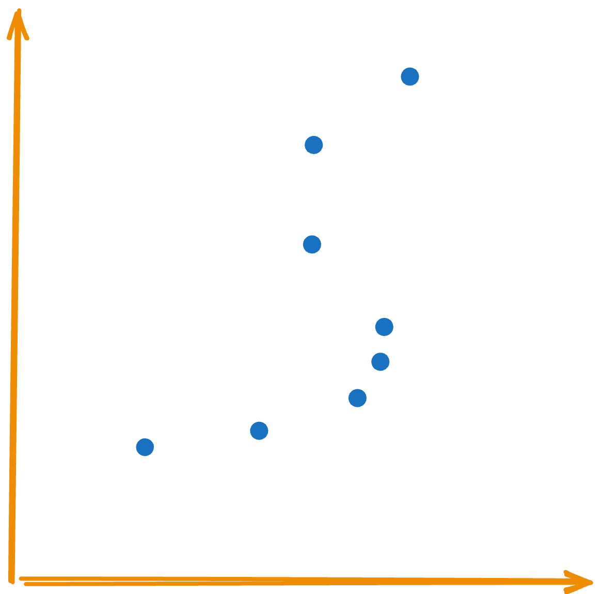
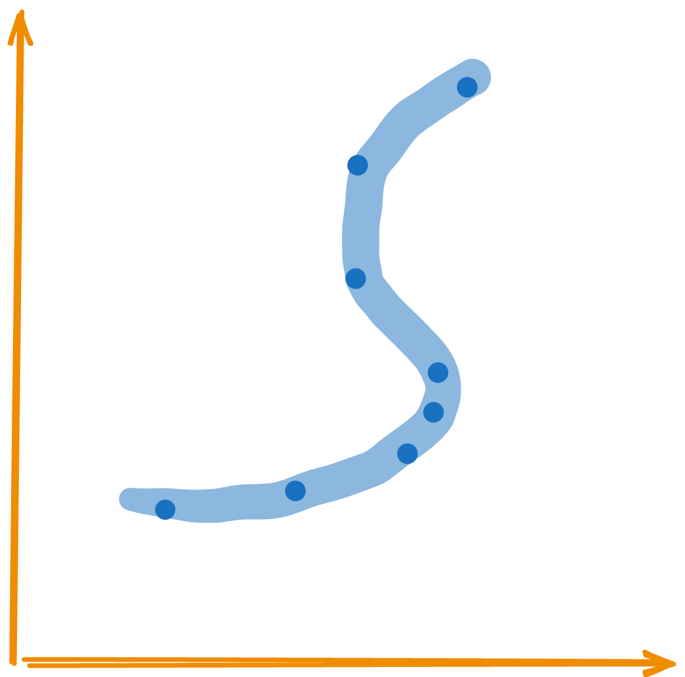
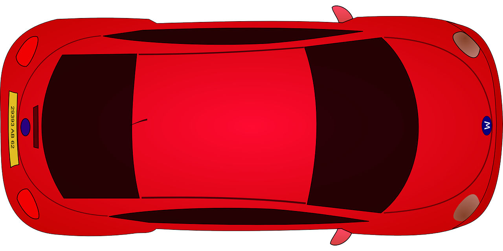
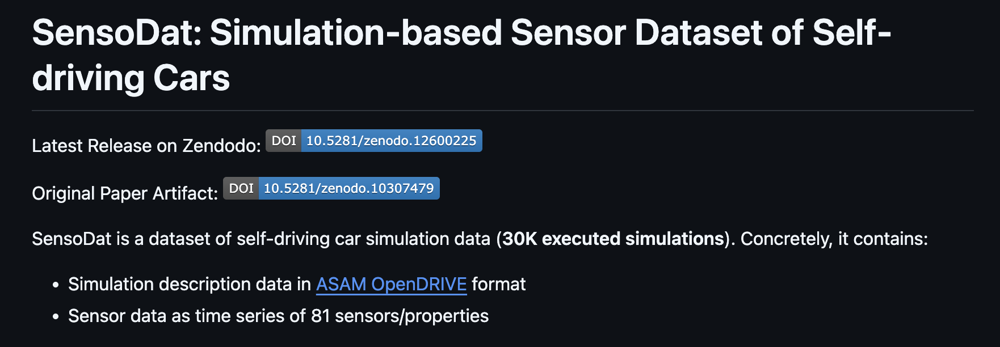
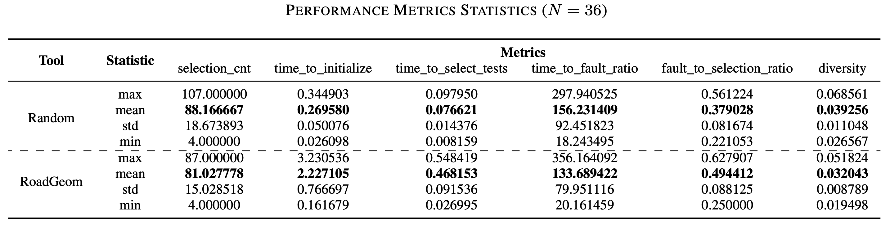

SBFT/ICST Tool Competition: Self-Driving Car Testing
Christian Birchler
University of Bern
Zurich University of Applied Sciences
Switzerland
Stefan Klikovits
Johannes Keppler University Linz
Austria
Mattia Fazzini
University of Minnesota
USA
Sebastiano Panichella
University of Bern
Switzerland
Self-Driving Car Competition
Context
- Cost
- Replicability
- Realism
- Reliability
- Cost
- Replicability
- Realism
- Reliability
- Cost
- Replicability
- Realism
- Reliability
BeamNG.tech Simulator


How is a test defined?
How is a test defined?
When is a test failing or passing?

Passed
Failed
Regression Testing
Regression Testing
Regression Testing
Regression Testing
Regression Testing
What tests should be selected?
How should tests be selected?
- Competition code on GitHub
- Troubleshooting with Issues and Discussion Forum
- Docker Images of all Tools!
Infrastructure
%%{init: {'theme': 'dark', 'themeVariables': { 'darkMode': true }}}%%
sequenceDiagram
Evaluator ->>+ ToolX: initialize
ToolX -->>- Evaluator: ok
Evaluator ->>+ ToolX: select
ToolX -->>- Evaluator: return selection
%%{init: {'theme': 'dark', 'themeVariables': { 'darkMode': true }}}%%
block-beta
columns 3
d("Evaluator (Docker Container)"):1
blockArrowId5<["gRPC"]>(x)
g("ToolX (Docker Container)"):1
block:group3:3
docker("Docker with Nvidia Runtime")
end
Protocol Buffers
syntax = "proto3";
service CompetitionTool {
rpc Name(Empty) returns (NameReply) {}
rpc Initialize (stream Oracle) returns (InitializationReply) {}
rpc Select (stream SDCTestCase) returns (stream SelectionReply) {}
}
message Empty {}
message NameReply {
string name = 1;
}
message Oracle {
SDCTestCase testCase = 1;
bool hasFailed = 2;
}
message SDCTestCase {
string testId = 1;
repeated RoadPoint roadPoints = 2;
}
message RoadPoint {
int64 sequenceNumber = 1;
float x = 2;
float y = 3;
}
message InitializationReply {
bool ok = 1;
}
message SelectionReply {
string testId = 1;
}
syntax = "proto3";
service CompetitionTool {
rpc Name(Empty) returns (NameReply) {}
rpc Initialize (stream Oracle) returns (InitializationReply) {}
rpc Select (stream SDCTestCase) returns (stream SelectionReply) {}
}
...
What are the evaluation metrics?
@dataclass
class EvaluationReport:
"""This class holds evaluation metrics of a tool."""
tool_name: str
benchmark: str
test_suite_cnt: int
selection_cnt: int
time_to_initialize: float
time_to_select_tests: float
time_to_fault_ratio: float
fault_to_selection_ratio: float
diversity: float
Benchmark

- 32,580 Test Cases
- Generated by three test generators
Experiments
The experiments are conducted on an Open Stack virtual machine (VM) with 16GB of RAM, eight virtual CPUs, and an Nvidia Tesla T4 GPU.
Results of SBFT Competition
RoadGeom
Prakash Aryan
Birla Institute of Technology and Science, Dubai
University of Bern, Switzerland
Results of ICST Competition
Finding 1
On average, the random test selector selects the most test cases (µ = 88.17) compared to all tools.
Finding 2
DETOUR required on average (µ = 61.77sec) to initialize the tool with the provided initialization data. All other tools did not require more than a second.
Finding 3
For the selection phase, DETOUR requires, on average, most of the time (µ = 15.67sec) followed by DRVN Tool (µ = 10.49sec). The remaining tools did not require more than three seconds on average.
Finding 4
The random selector has, on average, the worst Simulation Time to Fault Ratio with µ = 156.23. With an average of µ = 65.39, the ITS4SDC tool has the best ratio.
Finding 5
The ITS4SDC tool has, on average, the best Fault to Selection Ratio (µ = 0.8) and the random baseline the worst with µ = 0.38.
Finding 6
There is no clear indication that the diversity metric differs among all tools.
ITS4SDC
Ali ihsan Güllü, Faiz Ali Shah, Dietmar Pfahl
University of Tartu, Estonia
Thank you all!
Any feedback and/or ideas are welcome for future editions.